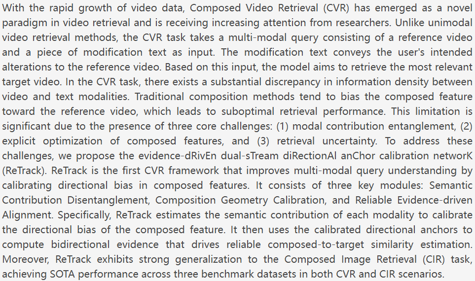
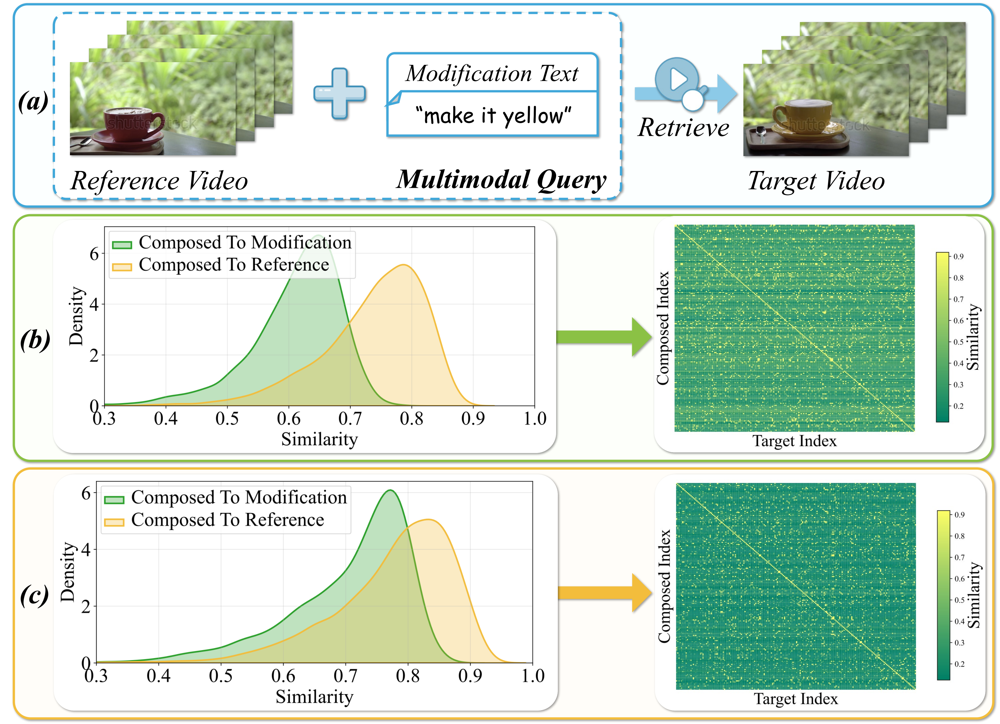
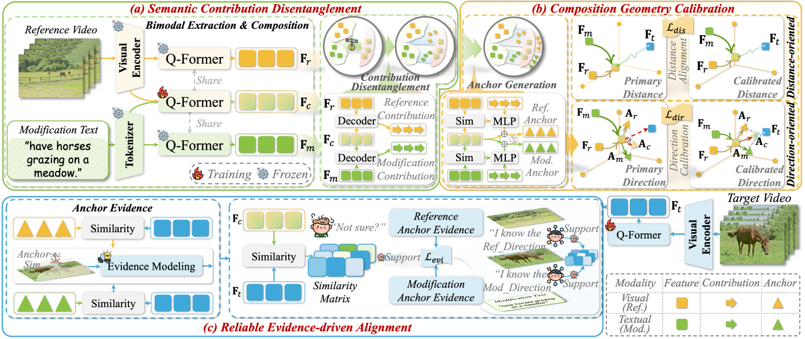
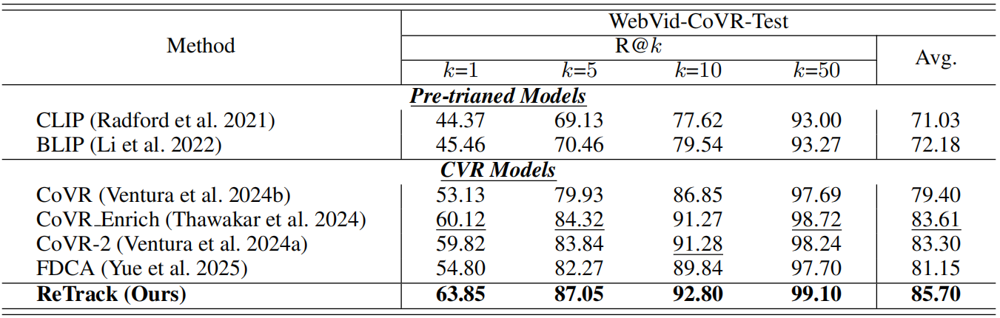
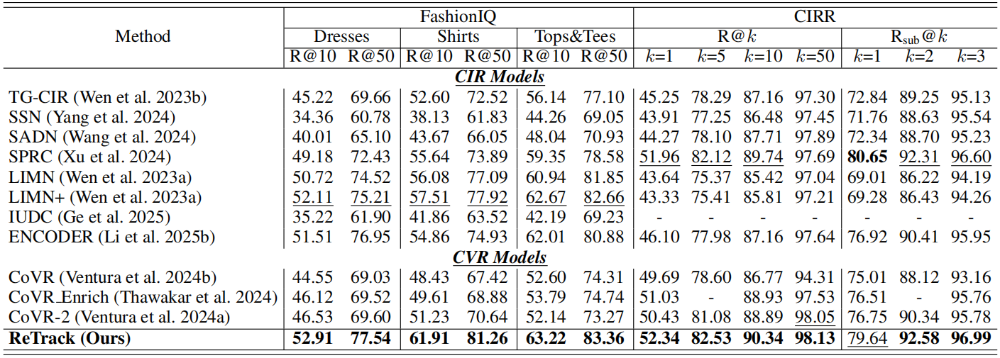
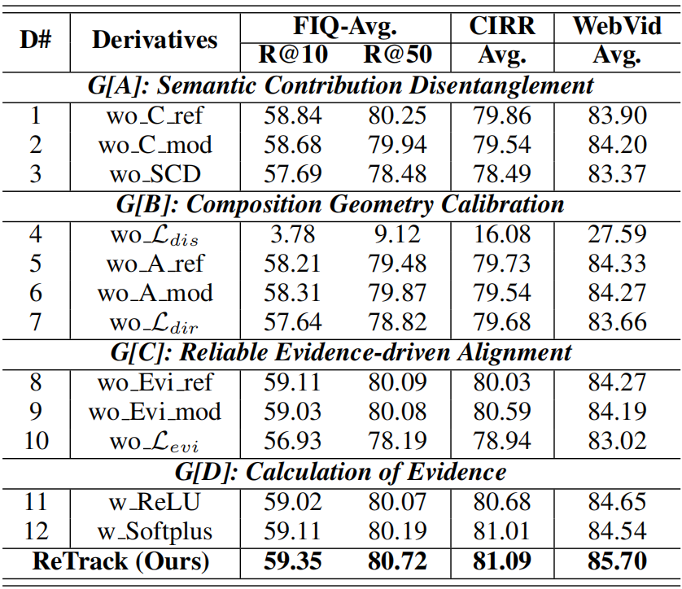
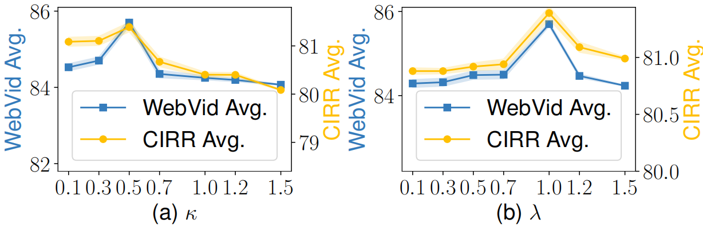
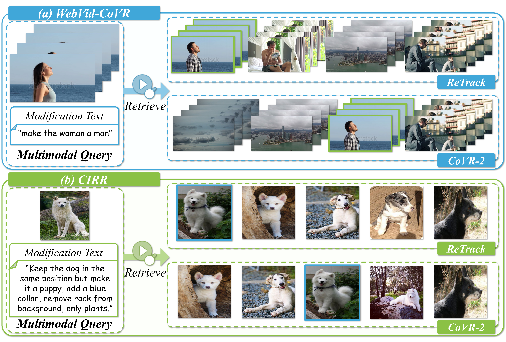

@inproceedings{ReTrack,
title={ReTrack: Evidence Driven Dual Stream Directional Anchor Calibration Network for Composed Video Retrieval},
author={Li, Zixu and Hu, Yupeng and Chen, Zhiwei and Huang, Qinlei and Qiu, Guozhi and Fu, Zhiheng and Liu, Meng},
booktitle={Proceedings of the AAAI Conference on Artificial Intelligence},
year={2026}
}